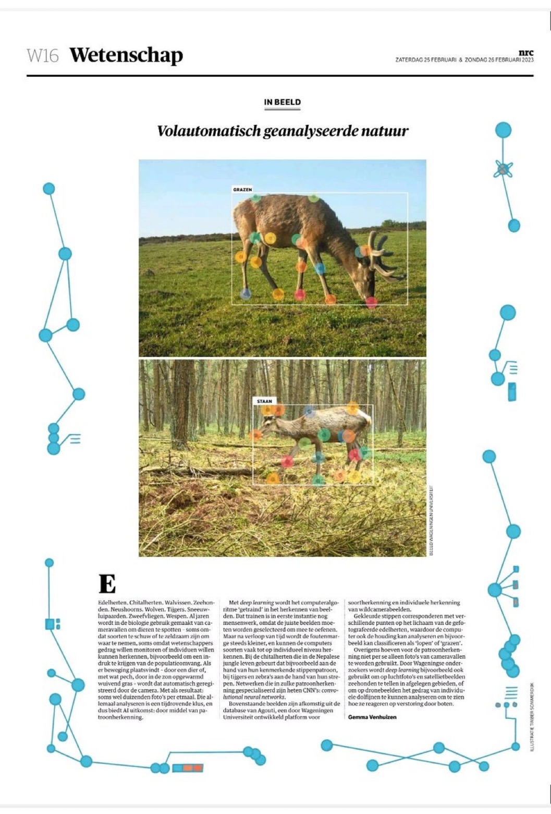
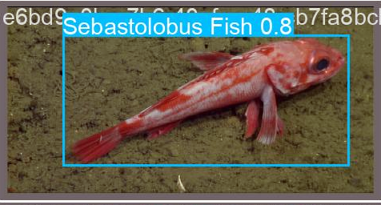

09 The search
for PhD positions
Applying for PhD positions
and the Fathomnet
programming competition.

I remember when I received pre-vocational secondary education advice at the age of 12 and found school difficult. I struggled to push myself to learn and coming from an educational family, doing well in school was an important quality. Reluctantly, as a little boy I practiced extra spelling and reading comprehension, while my brother had to study for half an hour a day to pass the gymnasium with flying colors. As the years have progressed I have also found the joy of learning. After my trip around the world, I came to Wageningen University in the Netherlands, where I even noticed that because of my background I was keen to go the extra mile compared to students for whom the university was a matter of course. Even after obtaining my master's degree in forestry and nature management, I was still learning. In fact, it was just getting started because there was still so much to learn in the field of artificial intelligence. Most students who want to continue their studies after their master's degree try to enter a PhD program to specialize in a scientific field.
Nice idea, but how are you going to get into these super competitive artificial intelligence PhD programs with a forest and nature management degree and hardly any programming experience? My grades at Wageningen University were certainly not bad, but then again not what you say cum laude. Moreover, universities naturally prefer to hire someone who has been working with artificial intelligence for much longer than someone with a background in nature. Because I wanted it so badly, I took part against my better judgment in the winter of 2021 and of course everything was done to present myself as an artificial intelligence expert. With the help of my little brother Nick (thanks dude!!!), who is very handy with the computer, www.jorritvangils.com was set up, to which I could later, as you may have seen, add the expat experience .
 I pictured myself surfing in California when I put out the application for Caltech University Graduate Program in Computing + Mathematical Sciences. This preparation was an incredible amount of work. I had to provide three letters of recommendation from highly regarded people who had worked with me and wrote two application letters myself that I had checked by Adam, the father of the au pair family in Australia where I lived for six months in 2015. Finally, I sat for a morning for a survey with the most diverse questions such as my gender, origin and whether I had been in the US military. With all that paperwork you are just a number among hundreds of applicants, so I tried to get in touch with those people as well. In the run-up to Christmas 2021, I had a video call with Sara Beery, PhD student at Caltech University who is on her way to becoming incredibly successful because she is one of the first researchers to apply artificial intelligence to camera images of wild animals. She became a huge source of inspiration for what I once wanted to achieve. I even received an email from her supervisor Pietro Perona, a man with an enormous track record. Founder of artificial intelligence for photography with his own wikipedia page that ended his email to me with the letter p. These international contacts were a milestone in themselves. Everything had to be handed in before December 1 for positions that would start the following year in September 2022.
I pictured myself surfing in California when I put out the application for Caltech University Graduate Program in Computing + Mathematical Sciences. This preparation was an incredible amount of work. I had to provide three letters of recommendation from highly regarded people who had worked with me and wrote two application letters myself that I had checked by Adam, the father of the au pair family in Australia where I lived for six months in 2015. Finally, I sat for a morning for a survey with the most diverse questions such as my gender, origin and whether I had been in the US military. With all that paperwork you are just a number among hundreds of applicants, so I tried to get in touch with those people as well. In the run-up to Christmas 2021, I had a video call with Sara Beery, PhD student at Caltech University who is on her way to becoming incredibly successful because she is one of the first researchers to apply artificial intelligence to camera images of wild animals. She became a huge source of inspiration for what I once wanted to achieve. I even received an email from her supervisor Pietro Perona, a man with an enormous track record. Founder of artificial intelligence for photography with his own wikipedia page that ended his email to me with the letter p. These international contacts were a milestone in themselves. Everything had to be handed in before December 1 for positions that would start the following year in September 2022.
.png) Sara advised me to apply to as many universities as possible. And so I also did the above for Berkeley (California), EPFL (Switzerland), Ellis (Europe), Pittsburgh (New York) Princeton (New York) and the UvA (Amsterdam). Some of them cost $100 per application, so in addition to a lot of effort and deadline stress, it also became an expensive joke. After a few months, the results trickled in. You have not been invited for an interview, unfortunately we cannot admit you this year, we had so many good candidates. Not even given the opportunity to say anything about myself in a video call. However, it nevertheless made it clear to me that my profile at that time was still nowhere near good enough. And when I asked if they could give me feedback, only one researcher from Pittsburgh responded. What a harsh world, so much effort, and getting so little in return, although the contacts and documents could of course be used again in the future.
Sara advised me to apply to as many universities as possible. And so I also did the above for Berkeley (California), EPFL (Switzerland), Ellis (Europe), Pittsburgh (New York) Princeton (New York) and the UvA (Amsterdam). Some of them cost $100 per application, so in addition to a lot of effort and deadline stress, it also became an expensive joke. After a few months, the results trickled in. You have not been invited for an interview, unfortunately we cannot admit you this year, we had so many good candidates. Not even given the opportunity to say anything about myself in a video call. However, it nevertheless made it clear to me that my profile at that time was still nowhere near good enough. And when I asked if they could give me feedback, only one researcher from Pittsburgh responded. What a harsh world, so much effort, and getting so little in return, although the contacts and documents could of course be used again in the future.
 The man from Pittsburgh gave the tip to publish a scientific article for a better PhD application. An article written for and by scientists to share the results of research with each other. After my thesis on automatic behavioral recognition of red deer, there was a lot of interest within our Wageningen department of Wildlife ecology to write an article about my subject. And so I set up a research group with 8 people. We would increase the number of photos we used to train the models from 500 to 2100 with now also several animals per photo. Learning from the setbacks from the thesis, this paper should go a lot smoother. I worked hard on it until last winter 2023, but unfortunately I stopped research this spring.
The man from Pittsburgh gave the tip to publish a scientific article for a better PhD application. An article written for and by scientists to share the results of research with each other. After my thesis on automatic behavioral recognition of red deer, there was a lot of interest within our Wageningen department of Wildlife ecology to write an article about my subject. And so I set up a research group with 8 people. We would increase the number of photos we used to train the models from 500 to 2100 with now also several animals per photo. Learning from the setbacks from the thesis, this paper should go a lot smoother. I worked hard on it until last winter 2023, but unfortunately I stopped research this spring.
 The whole research was woven into the artificial intelligence website BOX21 (blog 7) which is still under development. It soon became apparent that many popular functionalities such as a data split did not work on BOX21, so that not only the scripts had to be adjusted, but also the entire website. My fun disappeared like snow in the sun because instead of working with artificial intelligence, I was more communicating, whether things were possible or not. Moreover, I did it all in my spare time, while here in Spain I was in financial trouble. Doing the annotations also became an eyesore. Imagine putting 18 dots exactly on the body parts for each animal in 2100 photos, and when a leg was behind a tree, the video had to be watched to predict where it could be. At some point I thought: Okay, I barely have money to live and I'm doing all this "voluntarily" so that I might have a paper in 2023, and just maybe in 2024 I can get into a PhD program. Although it was not an easy decision, it was with a heavy heart that I decided to stop the research and try to focus on the programming work at Ramon for BOX21 and on the programming competition in which I participate. As a small consolation, a nice article appeared in the NRC about our research.
 As mentioned in the previous blog, this spring, together with student Sean from Belgium and researcher Lukas from the Czech Republic, I am participating in the programming competition Fathomnet with the aim of automatically recognizing marine animals from the ocean as well as possible. Whether it will eventually become that PhD, a job as a researcher at an institute, or VAN GILS AI freelancer. Because I am sure that I want to do something with artificial intelligence one day, learning to make such an artificial intelligence model myself is of course step 1. This competition is therefore an excellent opportunity to dive into the codes together with experienced people.
 If you are going to work with artificial intelligence for photography, then of course you want to see pictures with recognized animals as quickly as possible, but that requires a lot of work. My Wageningen student laptop had far too little memory to store the 15,000 photos from, among others. to store crabs and starfish and so had to be converted from 8 to 16 GB RAM and from 250 to 1000 GB SSD. And Windows was also replaced by the Linux operating system because it apparently offers many more options. Now we could really start. Install Visual Studio code, create a virtual environment, download the photos and the yolov5 recognition algorithm. Fortunately, the makers of the competition had already indicated where the animals were in part of the photos, so luckily that painstaking work did not have to be repeated.
If you are going to work with artificial intelligence for photography, then of course you want to see pictures with recognized animals as quickly as possible, but that requires a lot of work. My Wageningen student laptop had far too little memory to store the 15,000 photos from, among others. to store crabs and starfish and so had to be converted from 8 to 16 GB RAM and from 250 to 1000 GB SSD. And Windows was also replaced by the Linux operating system because it apparently offers many more options. Now we could really start. Install Visual Studio code, create a virtual environment, download the photos and the yolov5 recognition algorithm. Fortunately, the makers of the competition had already indicated where the animals were in part of the photos, so luckily that painstaking work did not have to be repeated.

And when everything is in the correct format and the paths to the files are correct, you can finally start training. That had to be done on a special artificial intelligence computer, in my case it was in the Czech city of Pilsen because of the powerful GPU processor. Even with such a lightning-fast PC, I experienced during my thesis that training such a model could take 3 days. Remote control of that PC again took a lot of time but was again a super valuable skill. Instead of clicking the mouse, you type the codes in a terminal. Just applying those codes is fascinating. Type ls -1 | wc -l, the computer will tell you, for example, how many files are in a folder. All of those little tricks that can save you a lot of time if you master them. You can make these codes so compact that the four lines below perform all the steps just mentioned. In the last step, with python train.py, you really train the model to recognize the animals automatically:
- ./azcopy cp "https://lilablobssc.blob.core.windows.net/caltechcameratraps/eccv_18_all_images_sm.tar.gz" "$SCRATCH/Jorrit/datasets/CCT20_coco/" –recursive
- tar -xvzf $SCRATCH/Jorrit/datasets/CCT20_coco/eccv_18_all_images_sm.tar.gz
- coco_to_yolo.ipynb
- python train.py --data CCT20.yaml --epochs 3 --weights '' --cfg yolov5n.yaml --batch-size 2
You will notice by my enthusiasm that I can talk about it for a while. But we'll save that for next time. So, despite the disappointing PhD applications, it's still nice to get started with artificial intelligence and the website BOX21. We'll see where it will end. I'm going to start programming for a while. Thanks for reading and see you again next time!